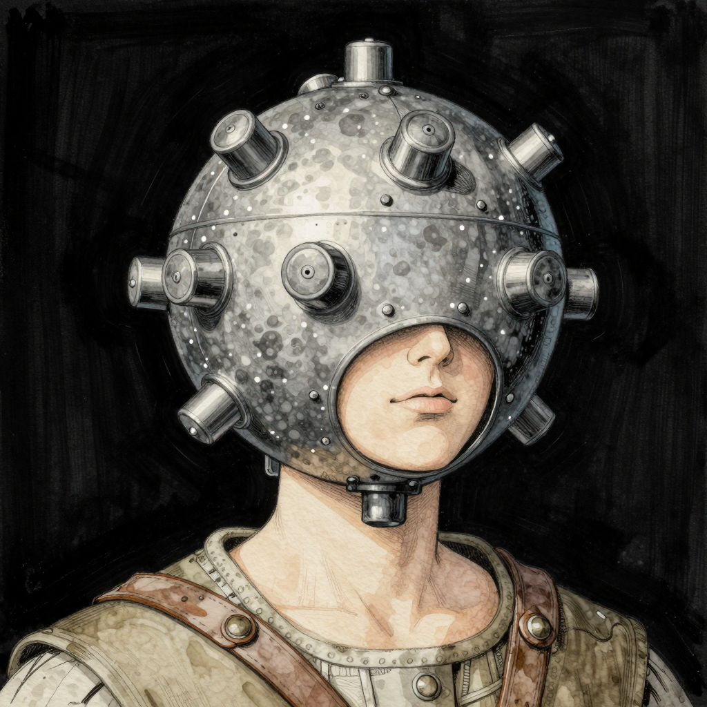

Session 2
The party picked up where they left off - at the herbalist's cottage. Phineas identified the half-spider / half-woman you dispatched looked just like Marla, the healer. Well, the top half anyway.

Not knowing what to make of that, the party searched for any signs that Marla's transformation may have been caused by a potion or spell gone awry, but found nothing.
They parted ways with Phineas and resumed tracking the giant rats to their lair. It wasn't long after that they encountered some boot prints in the forest. They were intrigued but decided to stack some stones and just kinda...burn the forest a bit...so they could find this later.
Before they found the end of the trail, they heard a mixture of horrible screaming & insane laughing. As Peace Guards of Kareka, they were familiar with the sound. These were Screamers, sent by a neighboring Wizard: Talia Ironheart.
Finishing off the Screamer's a little worse for the wear, the party continued following the tracks to sink hole in the middle of the forest. There they found a suspiciously convenient rope but after some quick investigation, and timely scouting by the party's Stormshifter, they found their way down safely into some ancient ruins.
Lured into a room deeper in the ruins, the party discovered they'd each been wearing a device that interfered with their perception of reality.
Cuts off all perception of reality, replacing it with a carefully curated alternative.
Does not function when out of range of a control center.

As your memories return, you remember more rumours about the Wizard Kareka. You don't know how you could have thought of him as anything more than another villain.